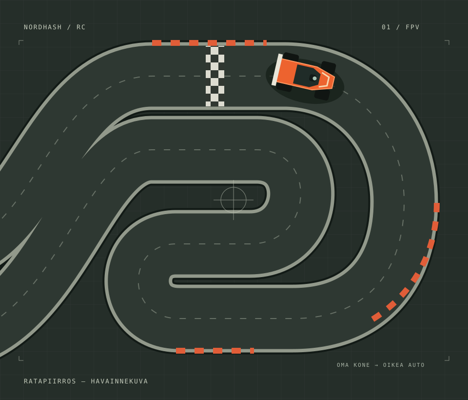

Nordhash RC / Kehitteillä
Sinun koneesi.
Meidän ratamme.
Oikea RC-auto.
Aja RC-autoa netin yli ja näe rata auton kamerasta. Omalla tietokoneellasi, näppäimistöllä tai peliohjaimella.
Rakennamme palvelua. Ajovuoroja ei vielä voi varata.

01 / Idea käytännössä
Kotona koneella.
Renkaat oikealla radalla.
Nordhash RC:n idea on yksinkertainen: auto ja rata ovat meidän päässämme, kuski siellä missä hänen tietokoneensa on.
- 01
Yhteys autoon netin yli
Tietokoneesi lähettää ohjauskomennot RC-autolle. Et tarvitse omaa autoa, lähetintä tai FPV-laseja.
- 02
Kamerakuva näyttää ajolinjan
Näet tietokoneesi ruudulla auton kameran kuvan. Mutkat ja radan reunat tulevat vastaan auton näkökulmasta.
- 03
Sinä ajat
Käännä, kiihdytä ja hidasta näppäimistöllä tai peliohjaimella. Auton liike tapahtuu fyysisellä radalla.
02 / Välineet
Alkuun sillä,
mitä pöydältä löytyy.
Palvelua kehitetään tietokoneella ajettavaksi. Näppäimistö ja peliohjain ovat ensimmäiset ohjaustavat.
Tutustu ohjaimiin ja vaatimuksiin →- Näppäimistö
- Suunniteltu ohjaustapa
- Peliohjain
- Yhteensopivuus tarkentuu testeissä
- Ratti ja polkimet
- Ei vielä tuettu
03 / Missä mennään
Ensin toimiva ajo.
Sitten lähtöruutuun.
Palvelu on kehitteillä. Testaamme kokonaisuutta ennen ajovuorojen avaamista.
Etäajossa kuvan ja ohjauksen viive vaikuttaa ajotuntumaan. Siksi yhteyden toiminta, ohjainten yhteensopivuus ja auton hallinta ovat asioita, jotka pitää saada kohdalleen.
Julkaisemme hinnat, ajovuorot ja tarkat laitevaatimukset, kun ne on vahvistettu. Tällä hetkellä sivustolta ei voi ostaa ajoa tai yhdistää autoon.
Lue, mitä FPV-RC-ajaminen tarkoittaa →04 / Kysymyksiä
Ennen kuin kysyt.
Onko tämä peli vai oikea RC-auto?
Tarkoitus on ajaa oikeaa, kameralla varustettua RC-autoa fyysisellä radalla. Kuva näkyy omalla tietokoneellasi ja ohjaus kulkee internetin kautta.
Voiko autoa jo ajaa?
Ei vielä. Palvelu on kehitteillä, eikä avoimia ajovuoroja tai julkista ajoyhteyttä ole saatavilla. Voit kysyä projektista sähköpostilla.
Tarvitsenko ratin ja polkimet?
Et. Ensimmäiset suunnitellut ohjaustavat ovat näppäimistö ja peliohjain. Ratti ja polkimet eivät vielä ole tuettuina.
Millainen tietokone ja yhteys tarvitaan?
Palvelu suunnitellaan tietokoneella käytettäväksi. Tarkat selain-, laite- ja yhteysvaatimukset julkaistaan testien jälkeen. Pelkkä suuri latausnopeus ei takaa hyvää ajotuntumaa: myös viive ja yhteyden tasaisuus vaikuttavat.
Paljonko ajaminen maksaa?
Hinnastoa ei ole vielä julkaistu. Ilmoitamme hinnat ja ajovuorojen pituudet ennen varausten avaamista.
Toimiiko mikä tahansa peliohjain?
Yhteensopivia ohjaimia ei ole vielä vahvistettu. Julkaisemme testatut mallit ja kytkentäohjeet, kun ohjaintestaus etenee.
05 / Yhteys
Kiinnostaisiko
päästä ajamaan?
Kysy projektista tai kerro, että haluaisit mukaan kokeilemaan. Kerro samalla, ajaisitko näppäimistöllä vai peliohjaimella.
Lähetä sähköpostia nordhashoy@gmail.com